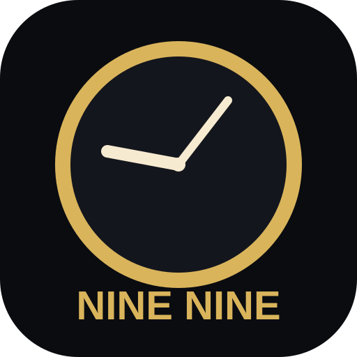

オリジナルカードバトル
NINE NINE
Ver.0.72 特別モード・図鑑スライド追加
CPU難易度基本的な状況判断・弱め
‼️ 特別モード
上のCPU難易度を選んでから開始できます。通信対戦ではホストが選んだモードを両端末へ同期します。
🔥 ライフ上限50モード初期・上限LIFE 50／⭐3・4・5だけで配布
⚡ ライフ上限10モード初期・上限LIFE 10／⭐1・2だけで配布
📚 カード図鑑
C001〜C280を横3列で一覧表示。番号帯・カード番号で検索し、詳細確認やカードテストができます。
⚙️ サウンド / テンポ端末ごとに保存
演出テンポ
📱 アプリモード確認中…
Safariの共有ボタン →「ホーム画面に追加」で、全画面のNINE NINEとして起動できます。
🛠 システム自動監査未実行
カード台帳・重複・段階処理・ダメージ計算などを確認します。
🏅 戦績勝率 0%
試合0
勝利0
敗北0
引分0
まだ対戦記録はありません。
C001〜C280を収録。毎試合280枚からランダム100枚だけを採用し、あなた50枚・CPU50枚へ重複なしで配布。残り180枚は不採用。